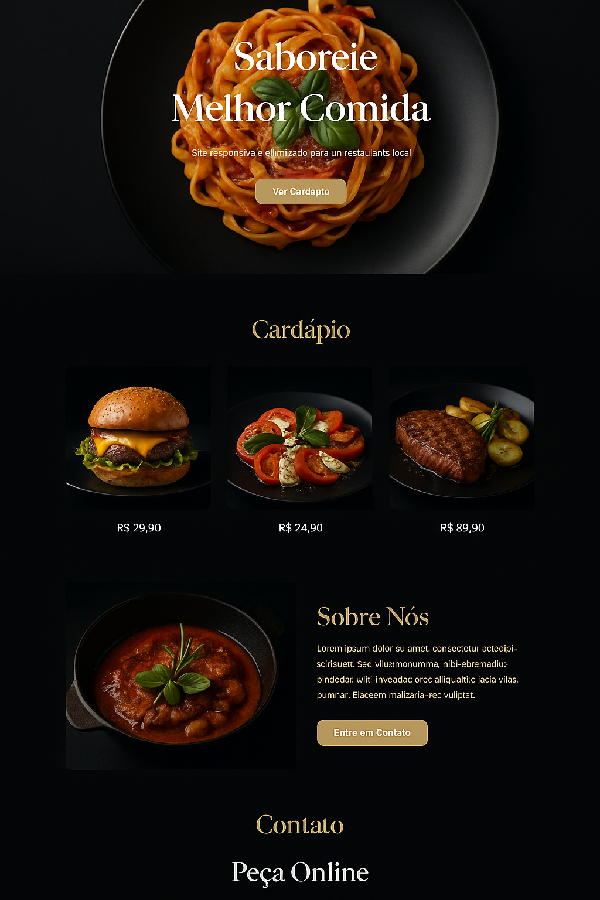

Transformando ideias em presenças digitais incríveis.
Sou Antolin A. Junior, especialista em desenvolvimento de sites profissionais, landing pages e presença online. Meu foco é ajudar empresas a criarem uma presença digital sólida que gere resultados reais.
Acredito que um bom site é a base do sucesso online. Ele deve ser mais que uma vitrine – precisa ser funcional, rápido e oferecer uma experiência de usuário impecável. Cada projeto é único, por isso, trabalho de perto com meus clientes para entender suas necessidades e transformar suas ideias em soluções digitais de impacto.
Cada site é uma jornada. Meu objetivo é criar soluções digitais que conectem sua marca ao seu público de forma eficiente. Trabalhei com empresas de diferentes tamanhos e setores, sempre focando em resultados práticos e soluções personalizadas.
Está pronto para dar o próximo passo? Se você precisa de um site profissional ou uma landing page estratégica, estou aqui para ajudar. Entre em contato e vamos transformar seu projeto digital.

Site responsivo e otimizado para um restaurante local.
Página de alta conversão para lançamentos digitais.
Site elegante para apresentação de portfólios fotográficos.
Desenvolvo lojas virtuais completas, personalizadas e prontas para vender, nas principais plataformas do mercado.
Criação e personalização de temas, configuração de frete, pagamento e tudo pronto para vender.
Lojas profissionais e escaláveis, com integrações e design sob medida para o seu nicho.
Desenvolvimento de lojas simples e eficazes, com foco em custo-benefício e agilidade.
Também trabalho com WooCommerce, Tray, Wix, VTEX Go e outras soluções sob demanda.
Utilizar plataformas consolidadas não é uma limitação — é uma decisão estratégica. Essas ferramentas
oferecem uma base segura, confiável e pronta para escalar, permitindo que pequenos e médios
empreendedores tenham uma loja profissional, funcional e fácil de gerenciar.
Meu papel é transformar essa estrutura em algo único: faço a personalização visual da loja, configuro os
meios de pagamento, frete, domínio, integrações e deixo tudo pronto para vender. Enquanto muitos gastam
meses desenvolvendo do zero, eu foco no que realmente importa: lançar sua loja com agilidade e
gerar resultados reais.